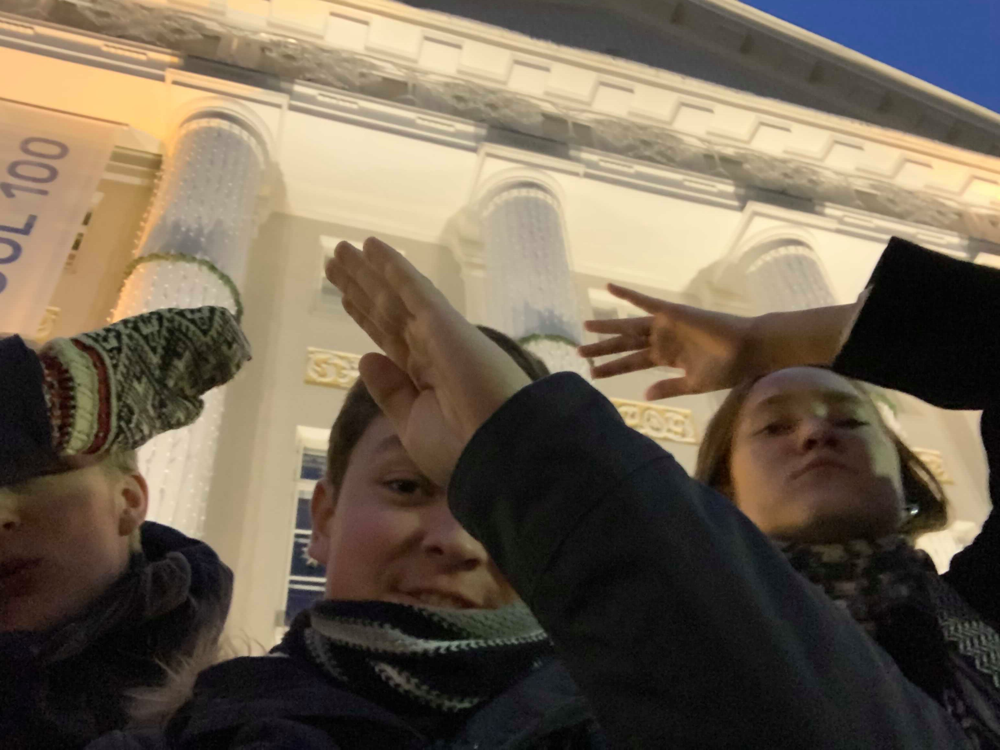

Meie oleme kolm Tartu Ülikooli tudengit: Raiko, Rene ja Carolin. Tegime lehekülje piparkoogipallidest, sest see on meie kõigi üks lemmikumaitest jõulumaiustest. Igaüks meist leidis tee piparkoogipallideni erinevalt: kes nuttes, kes naerdes, kes niisama olles. Kuid mis kõige tähtsam: see tõi meid kokku ning nüüd saame üksteise seltskonda nautida.
Õpime kõik Tartu Ülikooli informaatika esimesel kursusel. Raiko ja Carolin on veidi erilisemad kui Rene: Raiko õpib kõrvalerialana majandust ning Carolin võttis juba see semester ühe filosoofia teaduskonna vabaaine (wow!). Rene aga samal ajal maadleb matemaatilise maailmapildiga ning üritab kuidagi teiste asjadega hakkama saada. Küll temagi üks päev järele võtab. Eks piparkoogipallid aita.
